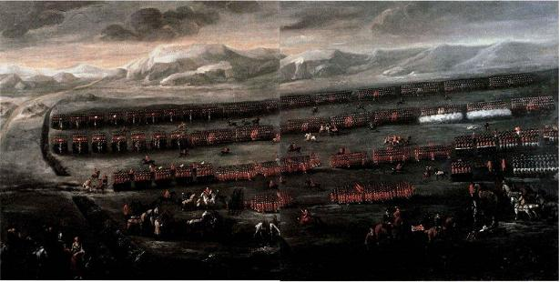
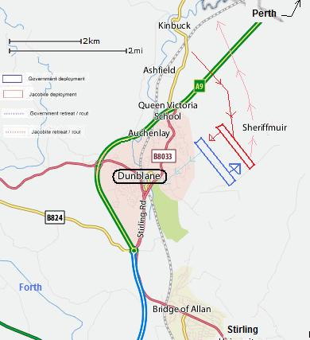

Up and Waur A' Willie!
Cours les avertir, Willie!
Battle of Sherrifmuir: 13th November 1715
|
SHERIFFMUIR - SHERRIFMUIR - SHERRAMOOR
Rough location map (bottom half) Map of the battle field |
Scots musical Museum Vol II song 188 Pages 195/196, 1788
Hogg's Jacobite Relics vol II N°5 page 18, 1821
Up and waur them a', Willie!
Variante 1
Variante 2 (SMM#188)
Sequenced by Ch.Souchon
|
To the tune
Popular from the early 18th, this Whig tune was the choice of 'Butcher Cumberland' and victor at Culloden (1746) - who apparently understood the burden "Waur 'm 'a, Willie!" as prompting him (William) to "worst them all"- (see note 3, below), when he danced with the Jacobite Lady Anne McKintosh , who had been brought to London during the rebellion. She immediately invited him to dance to her choice of tune, the Jacobite melody “The Old Stuart’s Back Again” . Noted in MS form in: - “A Collection of Country Dances written for the use of his Grace the Duke of Perth by Dav. Young, 1734;”, known as the "Drummond Castle MS". First printed: -in vol.3 of Oswald's Caledonian Pocket Companion 1751 (as "Up an' waur'em a', Willie") - Robert Bremner’s "Collection of Scots reels and country-dances" 1757. -in the McLean Collection published by James Johnson in Edinburgh in 1772. - in the Scots Musical Museum" , N°188 volume II in 1789 (as "Up an' warn a',Willie"). Also titled as “Up Willie, War Them A’". |
A propos de la mélodie
C'est sur cette mélodie "whigue", populaire dès le début du 18ième siècle, que le 'Boucher Cumberland', vainqueur de Culloden (1746) - et qui interprétait sans doute "waur 'm a', Willie" comme signifiant "casse-leur la figure, Guillaume!" (c'était son prénom), voir note 3 ci-après- porta son choix, lorsqu'il fut invité à danser avec la très Jacobite Lady Anne McKintosh , qui avait été "déportée" à Londres pendant la rébellion. Elle l'invita aussitôt à danser avec elle sur un air de son choix: la mélodie Jacobite “Les Stuart sont de retour” .
Noté sous forme manuscrite dans:
|

Sheet music- Partition

|
Scots Musical Museum version [1]
CHORUS: Up and waur a' Willie, [2] Waur, waur a'; [3] To hear my cantie Highland sang, Relate the thing I saw, Willie. 1.When we gaed to the braes o' Mar, And to the wapon-shaw, Willie, Wi' true design to serve the king And banish whigs awa, Willie. Up and waur a' Willie, Waur, waur a'; For Lords and Lairds [4] came there bedeen And wow but they were braw, Willie.
2. But when the standard was set up
3. But when the army join'd at Perth, [6]
4. But when we march'd to Sherramuir
5. But brave Glengarry [10] on our right,
6. For he ca'd us a Highland mob
|
Jacobite Relics Version
CHORUS Up and war them a', Willie; [2] Up and war them a' [3], Willie; Up and sell your sour milk, And dance and ding them a', Willie. 1. When we went to the field of war, And to the weaponshaw, Willie, With true design to serve our king, And chase our faes awa, Willie; Lairds and lords came there bedeen, [4] And vow gin they were sma', Willie, While pipers play'd frae right to left, Fy, furich Whigs awa, Willie. 3. But when our standard was set up, So fierce the wind did blaw, Willie, The golden knop down from the top Unto the ground did fa', Willie. Then second-sighted Sandy said, We'll do nae gude at a', Willie, [5] While pipers play'd frae right to left, Fy, furich Whigs uwa, Willie. 2. And when our army was drawn up, [6] The bravest e'er I saw, Willie, We did not doubt to rax the rout, And win the day and a', Willie. Out-owre the brae it was nae play To get sae hard a fa', Willie, While pipers play'd frae right to left, Fy, furich Whigs awa , Willie. 4. When brawly they attack'd our left, [8] Our front, and flank, and a', Willie, Our bauld commander on the green, Our faes their left did ca', Willie [9], And there the greatest slaughter made That e'er poor Tonald [10] saw, Willie, While pipers play'd frae right to left, Fy, furich Whigs awa, Willie. 5. First when they saw our Highland mob, They swore they'd slay us a', Willie; And yet ane fyl'd his breeks for fear,[11] And so did rin awa, Willie. We drave them back to Bonnybrigs, Dragoons, and foot, and a', Willie, While pipers play'd frae right to left, Fy, furich Whigs awa, Willie. 6. But when their general view'd our lines. And them in order saw, Willie, He straight did march into the town, And back his left did draw, Willie. Thus we taught them the better gate To get a better fa', Willie, While pipers play'd frae right to left, Fy, furich Whigs awa, Willie. 7. And then we rallied on the hills, And bravely up did draw, Willie; But gin ye speer wha wan the day, I'll tell ye what I saw, Willie: We baith did fight, and baith were beat, And baith did rin awa, Willie. [12] So there's my canty Highland sang, About the thing I saw, Willie. |
Traduction Scots Musical Museum [1]
REFRAIN: Cours les avertir, Willie, [2] Cours les avertir, [3] Mon chant des Highlands entraînant, Te dit ce que j'ai vu, Willie. 1. Quand nous étions tous à Braemar A la cérémonie, Willie Désireux de servir le Roi Et de chasser les whigs, Willie. - Cours les avertir, Willie, Cours les avertir; - Lords et Lairds [4] y étaient aussi Dans leurs plus beaux habits, Willie. 2. Mais tout au bout de l'étendard Voici que l'aquillon, Willie, S'acharne sur le sceau royal Et le jette au gazon, Willie - Cours les avertir, Willie, Cours les avertir; - Sandie, à la double vue, dit "Tout cela n'est pas bon!", Willie [5] 3. Lors du rassemblement à Perth, [6] Que de braves champions!, Willie Sûrs du retour de notre Prince Et sûrs que nous vaincrions, Willie. - Cours les avertir, Willie, Cours les avertir; - Tous les sonneurs jouaient "Dehors Les Whigs!" à l'unisson, Willie. 4. A Sherrifmuir premier contact Avec nos ennemis, Willie A gauche [8] Argyle nous attaque [7] Au flanc, de front aussi. Willie. - Cours les avertir, Willie, Cours les avertir; - Le traitre Huntly, s'enfuit alors, [9] Et Saint-Clair, et Seaforth... Willie. 5. A l'aile droite, Glengarry [10] Leur flanc gauche attaqua, Willie Ce fut la pire boucherie Que Donald provoqua, Willie; - Cours les avertir, Willie, Cours les avertir; - De peur Whittam fit dans ses braies [11] Et vite détala, Willie. 6. Il disait: "Ces gueux des Highlands Je vais les mettre en pièces!", Willie: On l'a chassé jusqu'à Stirling, Ses dragons et le reste, Willie! - Cours les avertir, Willie, Cours les avertir; - Puis sur un mont avoisinant, On s'est remis en rangs, Willie. 7. Et quand Argyle a vu nos rangs De nouveau bien serrés, Willie, Son aile gauche vers Dumblan Alors s'est repliée, Willie; - Cours les avertir, Willie, Cours les avertir; - Et nous marchâmes sur Auchter- airder pour aviser, Willie. 8. Je ne sais pas qui fut vainqueur; Je dis ce que j'ai vu, Willie. Les deux camps, furent pris de peur, Mais se sont bien battus, Willie.[12] - Cours les avertir, Willie, Cours les avertir; - "Tout cela n'est pas bien!", a dit Sandie, l'homme au nez fin, Willie. (Trad. Ch.Souchon(c)2004) |
|
[1]
Scots Musical Museum
version. The MS.of this song is in the British Museum. In the Interleaved Museum Burns describes how he obtained the verses, as follows: "This edition of the song I got from Tom Niel, of facetious fame in Edinburgh."
[2] Willie : Hogg offers an interesting suggestion in his comment to this song: "There not being a Willie of any note in the whole Jacobite army, the chorus must have been an older one, adapted, not improbably, from a song of king William's time;" [3] "Up and warn all" : Burns states that the expression alludes to the " Crantara " or warning of a Highland clan to arms. Not understanding this, the Lowlanders of the west and south say: " Up and waur them a'". ("waur" mean "to worst", to "surpass"). The Gaelic phrase Burns alludes to is the famous "fiery cross" which appears as "crois taraidh" in the song "Cumha le Lochial , note 3. [4] "Lords and lairds" There were also English lords in the Jacobite army. [5] "Royal nit, golden knop" : "It is reported that when this standard was first erected, the ornamental ball on the top fell off, which depressed the spirits of the superstitious Highlanders, who deemed it ominous of misfortune in their cause." (George Charles of Alloa, quoted by Hogg). "Second-sighted Sandy" is general Alexander Gordon of Auchintool. |
[1]
Musée Musical Ecossais
: Le manuscrit de ce chant est au British Museum. Dans l'exemplaire interfolié du "Musée", Burns indique qu'il a obtenu ces couplets "de Tom Niel qui jouit à Edimbourg d'une solide réputation de farceur."
[2] Willie . Hogg, dans son commentaire sur ce chant, fait une intéressante suggestion: "Comme il n'y a pas un seul Willie célèbre dans toute l'armée Jacobite, le refrain doit être emprûnté à un autre chant plus ancien, sans doute, datant de l'époque du roi Guillaume (William)." [3] Cours les avertir : Selon qu'il s'agit d'un terme des Hautes ou des Basses Terres, le titre peut signifier "avertir le clan" (gaélique " crantara ") ou "surpasser, vaincre" (selon Robert Burns). Le mot auquel pense Burns désigne la fameuse "croix de feu". Il apparaît sous la forme "crois taraidh" dans le chant "Cumha le Lochial , note 3. [4] Lords and Lairds : il y avait aussi des seigneurs anglais dans l'armée jacobite. [5] Sceau royal" : On rapporte que lorsque l'étendard fut dressé la première fois, le globe ornemental tomba du sommet de la hampe, ce qui frappa beaucoup les esprits des Highlanders superstitieux qui y virent un mauvais présage pour la suite de leur entreprise." (George Charles of Alloa, cité par Hogg). "Sandie l'homme au nez fin" est le général Alexandre Gordon d'Auchintool. |
|
[6]
Perth
: On the 6 September 1715, the Earl of Mar, John Erskine raised the Stewart Standard and by the end of the month had gathered twelve thousand men around
him who brought the east of Scotland as far as Perth under Jacobite control.
[7] Brave Argye : John Campbell, Duke of Argyll was ordered to halt him moving any further. Both armies met at Sherrifmuir near Dunblade on 13th September 1715. [8] "attacked our left" : Unaware of the dispositions of the other, the opposing generals drew up their forces so that their right wings overlapped the other's left. The Jacobite troops which were intended to comprise the left wing which were hastening uphill to the higher ground of Sherrifmuir in four columns of march were suddenly confronted by the right wing of the Hanoverian army. A confused, incomplete deployment into line of battle convened. [9] "Traitor Huntly gave way" : A Lowland Jacobite regiment of the left wing (either Huntly 's or Panmure 's foot) which had got itself out of place and in front of the Camerons "broke" after receiving fire from the Hanoverian army. ( Seaforth was William McKenzie, 5th Earl of Seaforth . St. Clair , was John Master of Sinclair, who was attainted, but afterwards pardoned. He died in 1750). [10] Brave Glengarry : In contrast, the right wing of Mar's Jacobite army, consisting of Clan Donald under Alastair Dubh (Alexander the Darkhaired), 11th Chief of the McDonalds of Glengarry, the Mcleans and the Breadalbane Campbells had swept away the Hanoverian left wing before them. Breadalbane who was said to be "as cunning as a fox, wise as a serpent, and slippery as an eel", had promised the rebels to bring 12.000 men on the field, but only 300 arrived. The rest was kept away from the battle. Breadalbane claimed and obtained compensation from the government for this benevolent neutrality! [11] Whittam was the major-general who commanded the left wing of Argyll's army. As a result of their respective general's deployment, both opposing left wings were defeated. [12] "We baith did fight, etc. : When night fell and the fight was over neither side knew which had won, though Argyll had lost more men than Mar. *********************** The next morning, however, Mar's army was not to be seen, having withdrawn northward towards Perth! |
[6]
Perth
: Le 6 septembre 1715, le Comte de Mar, John Erskine leva l'étendard des Stuarts et à la fin du même mois il avait réuni une armée de 12.000 hommes qui occupèrent tout l'est de l'Ecosse jusqu'à la hauteur de Perth.
[7] Argyle : John Campbell, Duc d'Argyll reçut l'ordre de lui barrer la route. Les deux armées s'affrontèrent à Sherrifmuir le 13 septembre 1715. [8] A gauche...nous attaque : Ignorant chacun les dispositions adoptées par son adversaire, les deux généraux déployèrent chacun l'aile droite de son armée pour qu'elle enserre l'aile gauche de l'autre. Les Jacobites qui constituaient l'aile gauche et qui faisaient mouvement en rangs par quatre vers les hauteurs de Sherrifmuir se firent soudain face à face avec l'aile droite de l'armée hanovrienne. Un déploiement confus et incomplet en lignes de bataille s'ensuivit. [9] "Le traître Huntly s'enfuit : Un régiment Jacobite des Lowlands de l'aile gauche (l'infanterie de Huntly ou de Panmure ) qui avait quitté la position assignée et se trouvait devant les hommes du clan Cameron se débanda après avoir essuyé le feu des Hanovriens. ( Seaforth était William McKenzie, 5ème comte de Seaforth . St. Clair designe John Cadet des Sinclair qui fut déchu de ses droits, puis réhabilité. Il mourut en 1750). [10] Glengarry : Par contre, l'aile droite Jacobite de Mar, composée des clans McDonald menés par Alastair Dubh (Alexandre aux cheveux bruns), 11ème Chef des McDonald de Glengarry, du clan McLean et d'une unité de Campbell de Breadalbane avait dispersé l'aile gauche des Hanovriens qui lui faisaient face. Breadalbane dont on disait qu'il était "malin comme un renard, sage comme un serpent et insaisissable comme une anguille", avait promis aux rebelles qu'il leur fournirait 12.000 soldats, mais il n'en arriva que 300. Il fit en sorte que les autres restent en dehors du combat. Breadalbane réclama et obtint compensation pour sa neutralité bienveillante! [11] Whittam était le général d'armée commandant l'aile gauche de l'armée d'Argyll. Si bien que les ailes gauches de chaque camp étaient enfoncées. [12] Les deux camps se sont bien battus : Quand la nuit tomba et que les combats avaient cessé, aucun des deux camps ne savait s'il avait pris l'avantage, bien que les pertes d'Argyll fussent supérieures à celles de Mar. *********************** Le lendemain matin, cependant, l'armée de Mar s'était retirée vers le nord en direction de Perth! |
|
 |
|
|
When the French and Spanish heard of Mar's indecision they withdrew their support
to the Rising. Mar, known from now on as "Bobbin'John", fled to France and
betrayed many of his Jacobite colleagues by revealing their identities.
The foolowing two ballads also recite, as the only thing certain that a battle was fought, and both sides ran away (the right wing of each army having put to flight each opposing left wing), but who won or who lost, the satirical rhymer knows not: "There's some say that we wan..." "Pray, came ye here the fight to shun?" Besides, this air served as model for at least two other songs: - "Election Ballad for Westerhall and - "Up an' rin awa, Willie". |
Quand les Français et les Espagnols eurent vent de l'indécision de Mar, ils se désolidarisèrent de soulèvement. Mar qui méritait pleinement son surnom d"'indécis" s'enfuit en France et il trahit beaucoup de ses amis Jacobites en révélant leur identité.
Les deux ballades qui suivent rabâchent qu' une bataille a bien eu lieu, qu'on a fui des deux côtés (chaque aile droite ayant mis en fuite l'aile gauche de l'autre), mais qui a gagné et qui a perdu, cela l'auteur de la satire ne peut le dire... "There's some say that we wan..." "Pray, came ye here the fight to shun?" Par ailleurs, cet air a servi de modèle pour deux autres chants au moins: - "Ballade électorale de Westerhall et - "Debout et va-t-en, Willie!". |